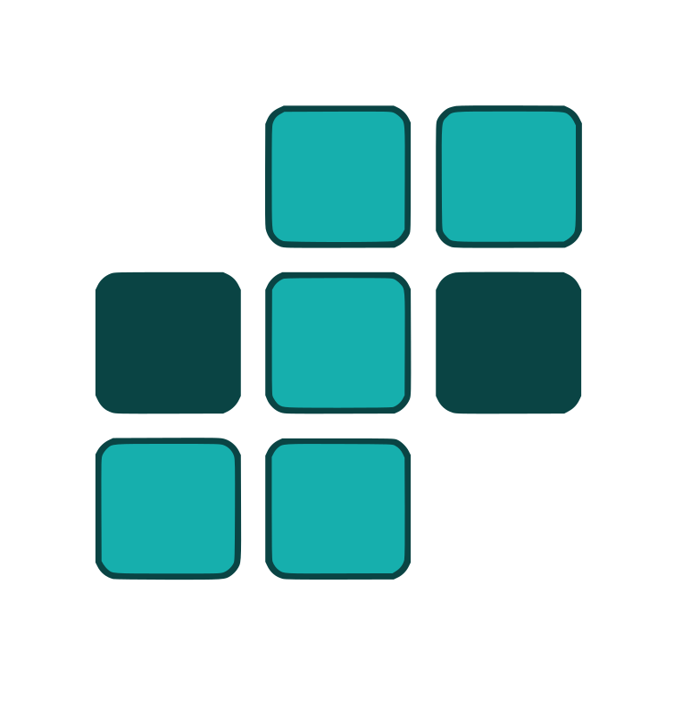
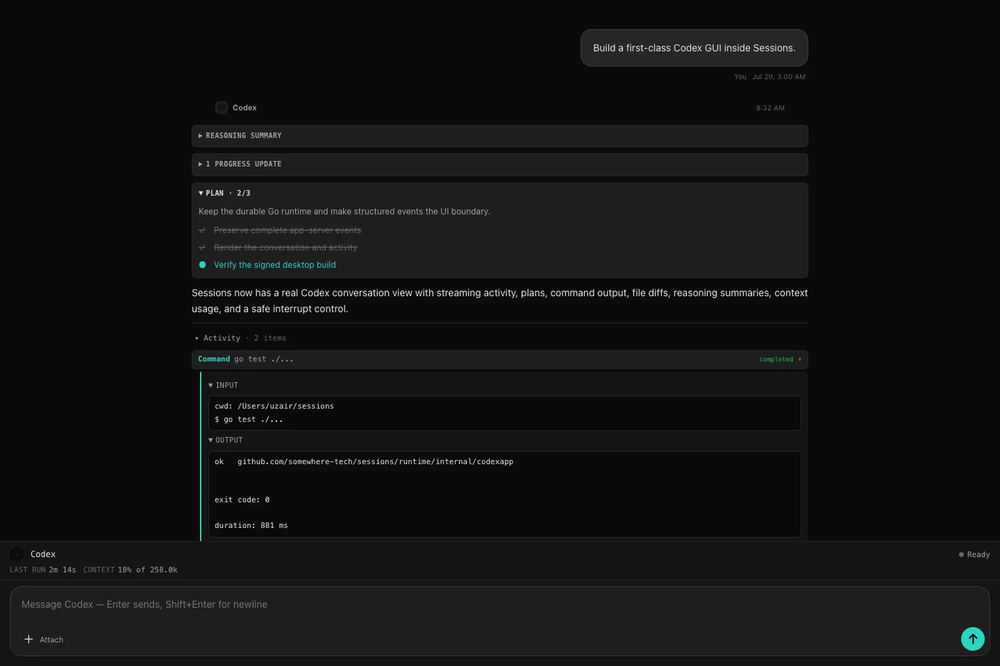
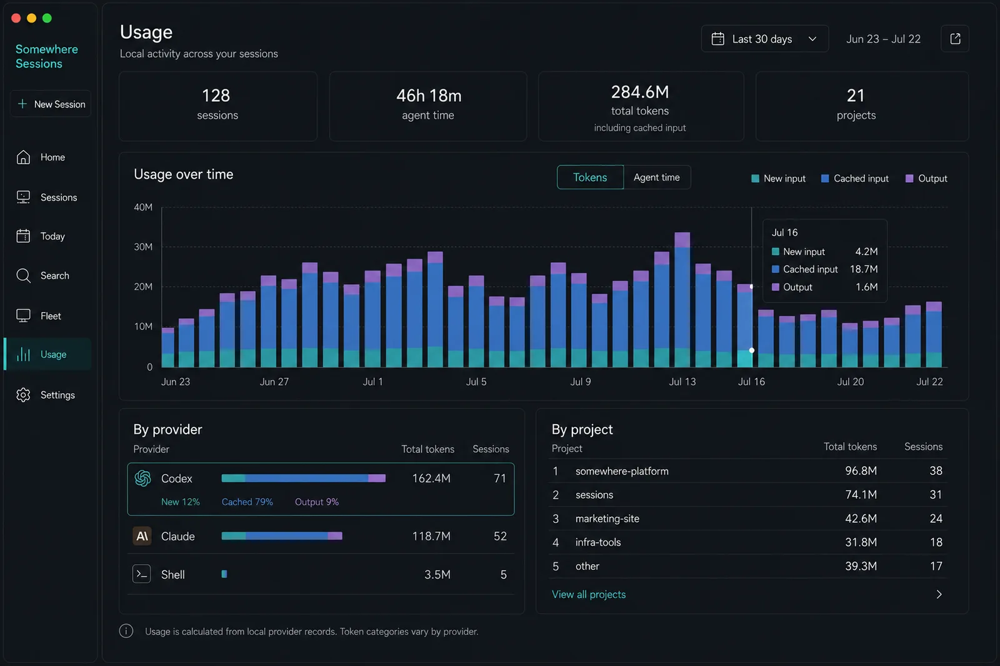
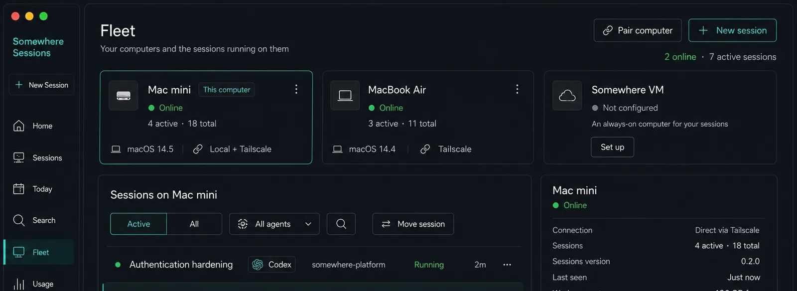

⌘
↓ Download for Mac
Sessions for Mac
Apple Silicon · v0.2.3 · signed & notarized
Or install with Homebrew.

Sessions by SomewhereNative agent operations
Run, monitor, search, and resume Claude Code, Codex, and shell sessions from one native app. Sessions keeps the work alive when windows close, apps update, and daemons restart.
Or install with Homebrew.
Portable app · Connects to a Mac host over LAN or Tailscale.
Free and open source. No Sessions account required. Mac hosts agents; the Windows preview is a client only.

Stop babysitting terminals
Sessions turns a pile of terminal windows into an operations inbox: what is running, what needs you, what finished, and why each lane exists.
Running, waiting, finished, and failed sessions stay visible with their latest useful summary—not just a vague “idle.”
Bring an existing Claude or Codex conversation into Sessions without copying its history or silently creating a second prompt queue.
Find exact phrases, user requests, agent answers, or ranked full-text matches across live and retained history.
Break down tokens, cache reads, reasoning, and estimated cost by provider, model, project, session, or your own tags.
Keep important manager sessions pinned, see their child health at a glance, and preserve who actually created every lane.
Use another native client over your LAN or Tailscale. Pair once, revoke anytime, and keep the Mac in charge.
A conversation, not a log dump
Plans render as live checklists. Tool activity collapses into useful groups. Approvals and questions stay prominent. Terminal remains one click away when you need the raw escape hatch.


Local-first is architecture
Sessions is free. Somewhere is the optional platform behind encrypted backup and future always-on compute—not a required data plane.
Native clients connect directly to your Mac over loopback, your LAN, or your own Tailscale network.
Install the app and work locally. Cloud features remain explicit, optional choices.
Independent supervised runners own each session below the UI and daemon lifecycle.
Optional backups can be encrypted on your Mac with a recovery key only you hold.
Start with the machine you already own
Download the native Mac app, then add Windows as a paired view when you want your fleet on another screen. Android is next.